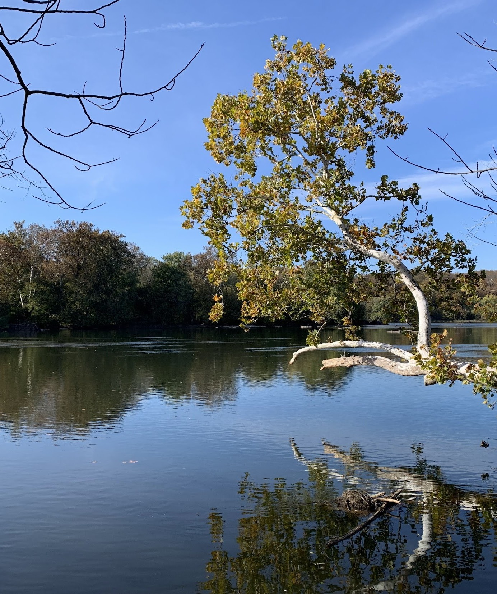

tallboy writes.
2/22/26
poetry
There is no Advil on this plane
,
I Carry Two
,
night terrors
,
A Meditation on Blues
,
Knitting Lessons
,
(Her) The Brown and Speckled Deer
,
Gorgeous Summers
&
prose
& published in
Writer's Eye Anthology (2024)
